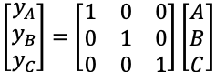
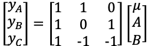

2 Constraints
There are only a few constraints (R calls them “contrasts”) to know:
2.1 contr.treatment
The default. Sets a level of the factor to have zero effect. You saw an example of the design matrix just a moment ago. Take a look at the design matrix according to R:
# look at the default coding of feed
contrasts( chickwts$feed )## horsebean linseed meatmeal soybean sunflower
## casein 0 0 0 0 0
## horsebean 1 0 0 0 0
## linseed 0 1 0 0 0
## meatmeal 0 0 1 0 0
## soybean 0 0 0 1 0
## sunflower 0 0 0 0 12.2 “One-hot” encoding
You can do this yourself by removing the intercept. You gain interpretability, but now the significance level is telling you whether the factor level mean is different from zero (you usually want to know if it is different from average).

# fit a version of the model for chick weight that has no intercept
lm_nointercept = lm( weight ~ feed - 1, data=chickwts )
summary( lm_nointercept )##
## Call:
## lm(formula = weight ~ feed - 1, data = chickwts)
##
## Residuals:
## Min 1Q Median 3Q Max
## -123.909 -34.413 1.571 38.170 103.091
##
## Coefficients:
## Estimate Std. Error t value Pr(>|t|)
## feedcasein 323.58 15.83 20.436 < 2e-16 ***
## feedhorsebean 160.20 17.35 9.236 1.91e-13 ***
## feedlinseed 218.75 15.83 13.815 < 2e-16 ***
## feedmeatmeal 276.91 16.54 16.744 < 2e-16 ***
## feedsoybean 246.43 14.66 16.810 < 2e-16 ***
## feedsunflower 328.92 15.83 20.773 < 2e-16 ***
## ---
## Signif. codes: 0 '***' 0.001 '**' 0.01 '*' 0.05 '.' 0.1 ' ' 1
##
## Residual standard error: 54.85 on 65 degrees of freedom
## Multiple R-squared: 0.9629, Adjusted R-squared: 0.9595
## F-statistic: 281.4 on 6 and 65 DF, p-value: < 2.2e-162.3 contr.sum: sum-to-zero constraints
With sum-to-zero constraint, the factor level effects must add up to zero. Thus, the intercept represents the average of the fitted factor effects, and the final level is calculated by adding together all of the shown estimates.

You can set the contrasts as an attribute of the data or pass it to the lm() function.
# set the feed variable to use sum-to-zero constraint
contrasts( chickwts$feed ) = contr.sum
chickwts$feed## [1] horsebean horsebean horsebean horsebean horsebean horsebean horsebean
## [8] horsebean horsebean horsebean linseed linseed linseed linseed
## [15] linseed linseed linseed linseed linseed linseed linseed
## [22] linseed soybean soybean soybean soybean soybean soybean
## [29] soybean soybean soybean soybean soybean soybean soybean
## [36] soybean sunflower sunflower sunflower sunflower sunflower sunflower
## [43] sunflower sunflower sunflower sunflower sunflower sunflower meatmeal
## [50] meatmeal meatmeal meatmeal meatmeal meatmeal meatmeal meatmeal
## [57] meatmeal meatmeal meatmeal casein casein casein casein
## [64] casein casein casein casein casein casein casein
## [71] casein
## attr(,"contrasts")
## [,1] [,2] [,3] [,4] [,5]
## casein 1 0 0 0 0
## horsebean 0 1 0 0 0
## linseed 0 0 1 0 0
## meatmeal 0 0 0 1 0
## soybean 0 0 0 0 1
## sunflower -1 -1 -1 -1 -1
## Levels: casein horsebean linseed meatmeal soybean sunflower# re-fit the linear model
lm_stz = lm(weight ~ feed, data=chickwts)
summary( lm_stz )##
## Call:
## lm(formula = weight ~ feed, data = chickwts)
##
## Residuals:
## Min 1Q Median 3Q Max
## -123.909 -34.413 1.571 38.170 103.091
##
## Coefficients:
## Estimate Std. Error t value Pr(>|t|)
## (Intercept) 259.131 6.543 39.602 < 2e-16 ***
## feed1 64.452 14.490 4.448 3.47e-05 ***
## feed2 -98.931 15.601 -6.341 2.48e-08 ***
## feed3 -40.381 14.490 -2.787 0.00697 **
## feed4 17.778 15.005 1.185 0.24042
## feed5 -12.703 13.641 -0.931 0.35519
## ---
## Signif. codes: 0 '***' 0.001 '**' 0.01 '*' 0.05 '.' 0.1 ' ' 1
##
## Residual standard error: 54.85 on 65 degrees of freedom
## Multiple R-squared: 0.5417, Adjusted R-squared: 0.5064
## F-statistic: 15.36 on 5 and 65 DF, p-value: 5.936e-10# calculate the missing coefficient
sum( coef(lm_stz)[[1]] - sum( coef(lm_stz)[2:6]) )## [1] 328.91672.4 contr.poly
This one is for ordered factors, and gets a bit more complicated. Beyond today’s scope.
2.5 contr.helmert and contr.SAS
Used in special situations that I wont get into, but you can infer their workings by looking at how they set up the design matrix for our example:
# set the helmert contrast and look at its design
contrasts( chickwts$feed ) = contr.helmert
chickwts$feed## [1] horsebean horsebean horsebean horsebean horsebean horsebean horsebean
## [8] horsebean horsebean horsebean linseed linseed linseed linseed
## [15] linseed linseed linseed linseed linseed linseed linseed
## [22] linseed soybean soybean soybean soybean soybean soybean
## [29] soybean soybean soybean soybean soybean soybean soybean
## [36] soybean sunflower sunflower sunflower sunflower sunflower sunflower
## [43] sunflower sunflower sunflower sunflower sunflower sunflower meatmeal
## [50] meatmeal meatmeal meatmeal meatmeal meatmeal meatmeal meatmeal
## [57] meatmeal meatmeal meatmeal casein casein casein casein
## [64] casein casein casein casein casein casein casein
## [71] casein
## attr(,"contrasts")
## [,1] [,2] [,3] [,4] [,5]
## casein -1 -1 -1 -1 -1
## horsebean 1 -1 -1 -1 -1
## linseed 0 2 -1 -1 -1
## meatmeal 0 0 3 -1 -1
## soybean 0 0 0 4 -1
## sunflower 0 0 0 0 5
## Levels: casein horsebean linseed meatmeal soybean sunflower# set feed to use the SAS contrast and look at its design
contrasts( chickwts$feed ) = contr.SAS
chickwts$feed## [1] horsebean horsebean horsebean horsebean horsebean horsebean horsebean
## [8] horsebean horsebean horsebean linseed linseed linseed linseed
## [15] linseed linseed linseed linseed linseed linseed linseed
## [22] linseed soybean soybean soybean soybean soybean soybean
## [29] soybean soybean soybean soybean soybean soybean soybean
## [36] soybean sunflower sunflower sunflower sunflower sunflower sunflower
## [43] sunflower sunflower sunflower sunflower sunflower sunflower meatmeal
## [50] meatmeal meatmeal meatmeal meatmeal meatmeal meatmeal meatmeal
## [57] meatmeal meatmeal meatmeal casein casein casein casein
## [64] casein casein casein casein casein casein casein
## [71] casein
## attr(,"contrasts")
## 1 2 3 4 5
## casein 1 0 0 0 0
## horsebean 0 1 0 0 0
## linseed 0 0 1 0 0
## meatmeal 0 0 0 1 0
## soybean 0 0 0 0 1
## sunflower 0 0 0 0 0
## Levels: casein horsebean linseed meatmeal soybean sunflower